Aujourd'hui : les derniers sons provisoires que j'avais fabriqués de toutes pièces (X0, B0, C0) : le tic-tac de la bougie du vote, la levée du chat enchaîné et sa chute. On les remplace par de vrais sons.
Les scènes : le tic-tac commence tout bas une minute avant la fin du vote, puis s'accélère et monte pendant les dix dernières secondes. Quand un chat est enchaîné, une force le soulève deux secondes jusqu'au milieu du cercle, sa carte se montre, puis il retombe à plat sur le sol.
Sans question : sons de Freesound, licences CC0 ou CC BY seulement (les auteurs CC BY seront crédités), coupés, nettoyés et mis au volume des objets de la table, comme la bougie. Les boutons jouent au volume du jeu : le tic-tac à sa vraie cadence, « Toute la scène » avec la levée et la chute à leur vrai moment.
Le tic-tac provisoire fabriqué à la main.
Un tic sourd puis un tac plus franc, bois et métal, très net.
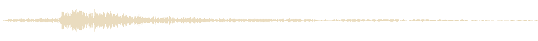
Mantel Clock Ticking.wav, Tewkesound, CC BY 4.0
Plus grave dans le timbre, une vieille horloge de mur.
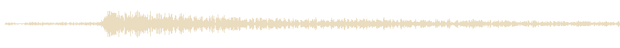
Antique wall clock.wav, straget, CC BY 4.0
Deux coups secs et clairs, presque un claquement de bois.
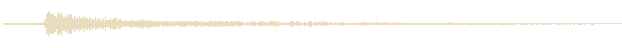
Old clock tick-tock, Duasun, CC0
Un tic-tac régulier et feutré, le plus discret.
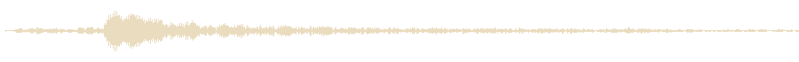
Mantlepiece clock ticks, nightcustard, CC BY 4.0
Un tic-tac fin et métallique, une petite horloge de bureau.
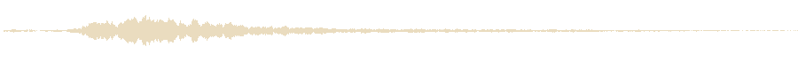
ticking of the clock 01.wav, blukotek, CC0
Le son provisoire fabriqué à la main.
Une cymbale à l'envers : un souffle qui gonfle jusqu'au sommet de la levée.
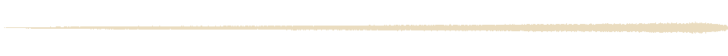
Reverse Crash Cymbal Projection, deleted_user_7146007, CC0
Une montée inquiétante, des résonances de métal qui grimpent.
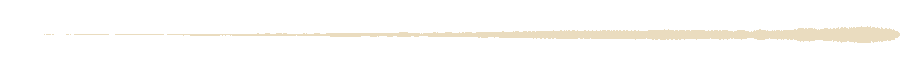
Metallic Horror Riser FX.wav, eldiariosonoro_, CC0
Un grondement magique qui enfle et culmine quand le chat arrive en haut.
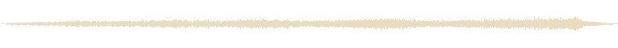
Dark Teleport.wav, oldestmillennial, CC BY 3.0
La montée de B1 descendue de cinq demi-tons, et des chaînes qui s'agitent pendant que le chat s'élève.
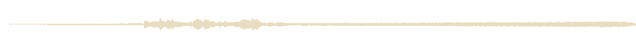
Reverse Crash Cymbal Projection, deleted_user_7146007, CC0 ; Chains Rattling.wav, mffm, CC0
Une nappe mystérieuse qui monte doucement, moins menaçante.
Mystical & Mysterious Rise and Fall, resourcemoon, CC BY 3.0
Le son provisoire fabriqué à la main.
Un splatch mouillé et rebondi, franchement comique.
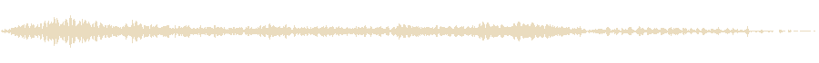
Cartoon - Splat!, Breviceps, CC0
Un seul coup mouillé, net et bref.
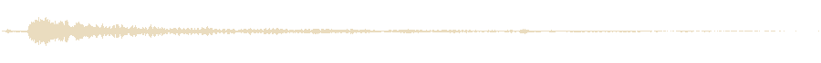
Wet Splat 1.mp3, nebulasnails, CC0
Un corps qui tombe sur le sol, mat, avec un petit rebond.
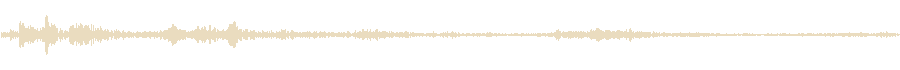
BODY FALL - V HVY - DIRT, leonelmail, CC0
Un corps qui s'écrase sur un parquet, sourd et sec.
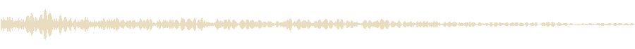
Falling body hits the floor, courtneyeck, CC0
La chute sur le plancher de C4 avec le splatch mouillé de C2 par-dessus : lourd et drôle à la fois.
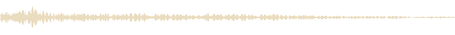
Falling body hits the floor, courtneyeck, CC0 ; Wet Splat 1.mp3, nebulasnails, CC0
Avec le tic-tac que tu as aimé (A1 sinon), sur la musique du jeu.
Avec la levée et la chute que tu as aimées (B4 et C5 sinon). Les sons provisoires jouaient beaucoup plus fort.